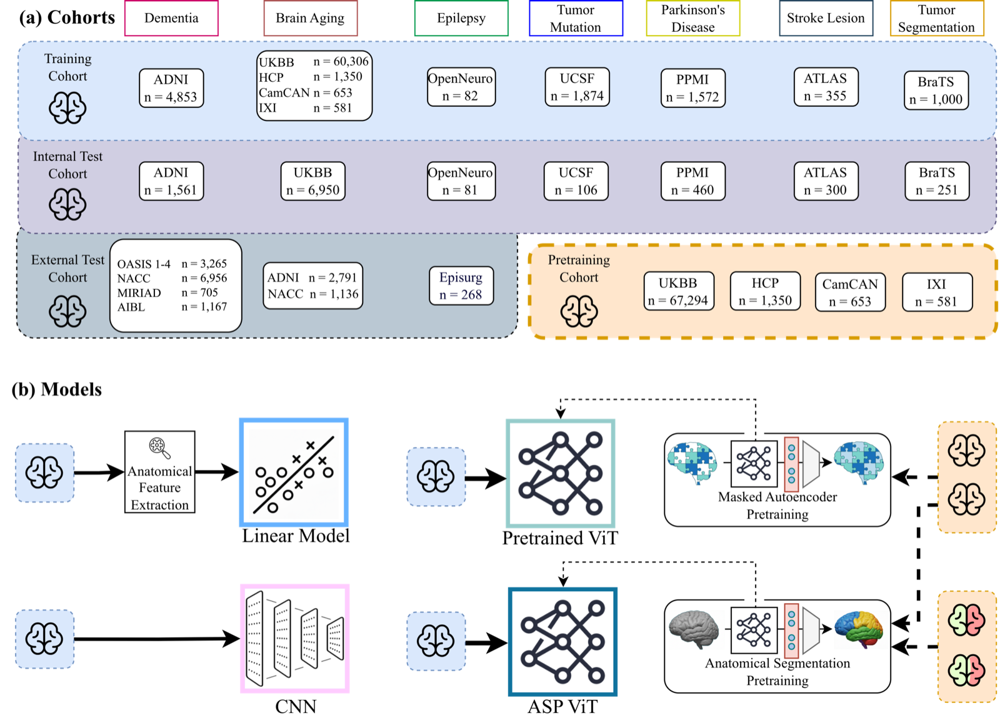
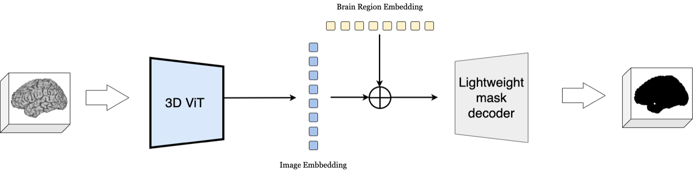
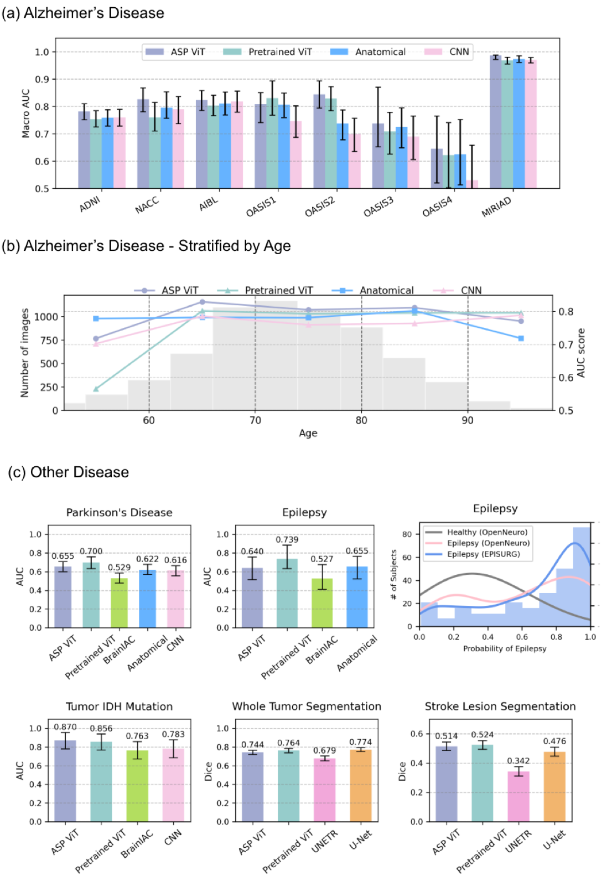
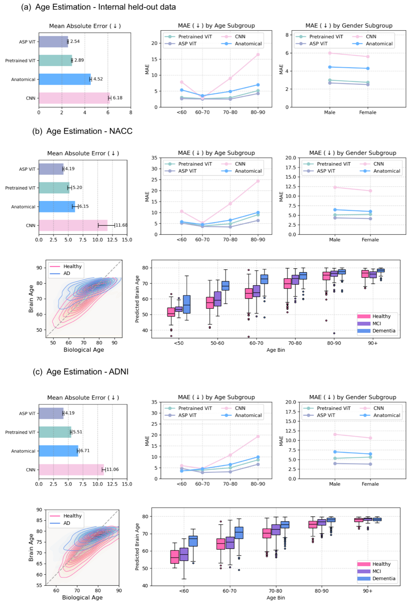

We compare linear models built on hand-computed anatomical features, convolutional neural networks trained from scratch, and vision transformers pretrained on a large general-population cohort — with and without our proposed anatomy-guided pretraining — across a pretraining cohort and seven downstream clinical tasks drawn from 18 public datasets.

Logistic/linear regression on 178 regional volumes, cortical surface areas, and cortical thickness values extracted with FreeSurfer's recon-all pipeline.
ResNet-18 for classification tasks and U-Net for segmentation, trained end-to-end from scratch on each task's labeled data.
A 3D ViT-Base pretrained via masked autoencoding (MAE) on 69,878 MRI scans, then adapted per task with linear probing, LoRA, or full finetuning.
Starts from the MAE-pretrained ViT, then continues pretraining on an auxiliary brain-region segmentation task to explicitly inject anatomical grounding into the embedding.
Simple anatomical-feature models are surprisingly strong (see Results). This motivates directly injecting anatomical information into a ViT during pretraining, rather than hoping it emerges implicitly from masked-image reconstruction alone.

Start from MAE pretraining. A 3D ViT-Base is first pretrained with masked autoencoding on the full pretraining cohort. Linear-probing shows its embedding already predicts brain volumes and demographics increasingly well — but only up to a point.
Bottleneck decoder, no skip connections. Unlike U-Net-style segmentation models, the mask decoder receives no local skip features — segmentation must be driven entirely by the global ViT embedding, forcing it to concentrate anatomical detail there rather than in the decoder.
Prompt-based regions. Predicting all 39 regions at once would require prohibitively large label volumes. Instead, a region is sampled at random each step; its learned embedding is added to the image embedding, and the decoder outputs a single binary mask for that region — an approach inspired by prompt-based segmentation models such as SAM.
Freeze, then alternate. The encoder is first frozen while the decoder learns to read out existing MAE features. Training then alternates between segmentation and MAE epochs, which prevents the model from forgetting the general visual features it already learned.
The 39 regions were selected from an initial FreeSurfer parcellation of 112 regions by keeping disease-relevant structures and merging symmetric or anatomically related regions, discarding only those contributing under 1% of total brain volume.
Alzheimer's diagnosis (8 cohorts), Parkinson's diagnosis, epilepsy diagnosis, tumor IDH-mutation detection, whole-tumor segmentation, and stroke-lesion segmentation. Across nearly every task, ASP ViT, Pretrained ViT, CNN, and the simple anatomical logistic-regression model perform statistically indistinguishably — anatomical features alone remain a remarkably strong baseline.

With a much larger cohort for a single task (biological age estimation, n≈62,890), differences between models finally emerge, and ASP ViT achieves the lowest error of all models, in both the internal cohort and two independent external cohorts.

Anatomical features remain competitive. Across public cohorts of a few hundred to a few thousand scans, a simple linear model on FreeSurfer features matches CNNs and foundation-model ViTs — while being cheap, interpretable, and easy to train.
Diagnostic performance may be saturating. On current public dataset sizes, the three paradigms converge to similar performance ceilings; larger cohorts, not more sophisticated models, look like the more promising lever.
ViTs learn anatomy implicitly — slowly. MAE pretraining alone gradually encodes anatomical structure, but explicit segmentation supervision (ASP) accelerates this substantially and pays off once enough downstream data is available, as shown in brain-age estimation.
Fast, learned segmentation could make anatomical pipelines scale. Tools like FastSurfer could replace costly classical pipelines, keeping anatomical-feature models practical as an efficient, robust baseline going forward.
This work is currently unpublished. The citation above will be updated with a DOI / arXiv identifier once the manuscript is released.